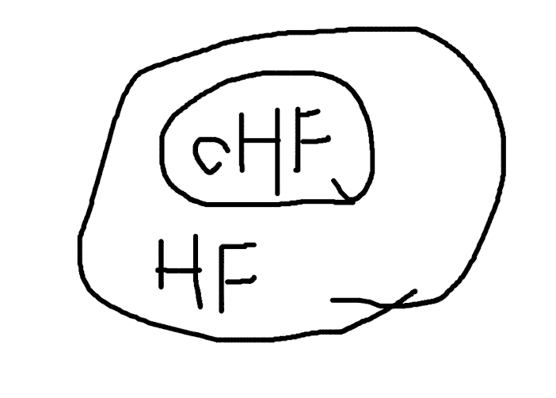

Hash Functions and Serialization
Hash function
A hash function maps data to its hash values. A hash value is like a quasi-unique identifier for data, allowing the data to be represented in a smaller, memory-friendly form. There are many implementations of hash functions. You can think of them as a black box: data goes in, a hash value comes out.

For example, we can take a character’s ASCII code as its hash value:
HASH("a") = 97
HASH("b") = 98
HASH("c") = 99
HASH("d") = 100
For data consisting of two characters, add the two characters’ ASCII codes to produce the hash value:
HASH("ab") = 97 + 98 = 195
HASH("cd") = 99 + 100 = 199
But it’s easy to see a problem: HASH("ad") == HASH("bc") == 197. For strings of length 3, 4, or more, collisions (duplicate hash values) become even more likely.
Collisions are allowed—hash values may repeat—but if there are too many of them, the hash function loses its utility and use cases. If everything collides, you can’t distinguish anything; what good is a hash then?
Unfortunately, even the best hash functions can’t eliminate collisions; they can only reduce the probability. One idea—by analogy to sharding in databases—is to give each character enough “headroom.”
We can redesign our hash function: for a single character, still output its ASCII code. For two characters, multiply the first character by a base and then add the second character. Since the first character becomes large after multiplication, adding the second character’s ASCII code on top of it should avoid collisions regardless of the second character.
HASH("ab") = 97 * 1000 + 98 = 97098
HASH("cd") = 99 * 1000 + 100 = 99100
HASH("ad") = 97 * 1000 + 100 = 97100
HASH("cd") = 98 * 1000 + 99 = 98099
This at least solves collisions for two-character strings.
Generalizing to longer strings: choose a prime as the base to avoid repetitive patterns from addition. To ensure sufficient “space,” use increasing powers of the prime for each character. The formula:
hashCodes = char1 * base^(l-1) + char2 * base^(l-2) + ...
Here, hashCodes is the output hash value, char1 is the first character, char2 the second, base is the chosen prime, and l is the string length. For a 3-character string, the first character uses base^2, the second uses base^1, the third uses base^0, and so on.
If we choose 31 as the prime, an implementation looks like:
public static int hashCode(byte[] value) {
int h = 0;
for(int i = 0; i < value.length; ++i) {
h = 31 * h + value[i];
}
return h;
}
The exact code may not match your initial intuition, but you can trust it aligns with the formula above.
hashCode("a") = 97
hashCode("ab") = 97 * 31 + 98 = 3105
hashCode("abc") = 97*31^2 + 98*31 + 99 = 96354
This is how hashCode is implemented in the JDK (Java Development Kit).
Cryptographic hash function (CHF)
It’s not hard to see that, for simple hash functions, one can often reconstruct the original data from the hash value. Suppose we already know the data length is 2, and characters use ASCII (0–255). We can write a program that enumerates all pairs (x, y) that satisfy the target hash value:
public static String deHashCode(int code) {
for (int x = 0; x <= 255; x++) {
int y = code - 31 * x;
if (y < 0 || y > 255) {
continue;
}
System.out.println(((char) x)+","+((char) y));
}
return "";
}
For example, when hashCode = 3105, we might get output like:
\,ý
],Þ
^,¿
_,
`,
a,b
b,C
c,$
d,
The original data ab appears among the (few) possibilities.
Is there a way to make it harder to infer the original data from the hash value? In public-key cryptography, % (modulus) plays a major role. Hash functions can also borrow ideas from cryptography.
“Cryptographic” is a modifier on “hash function,” meaning a hash function that incorporates cryptographic techniques.
MD5 is a very widely used—and nearly obsolete—cryptographic hash function that maps inputs of arbitrary length to a 128-bit hash value.
md5("a") = 0cc175b9c0f1b6a831c399e269772661
md5("ab") = 187ef4436122d1cc2f40dc2b92f0eba0
MD5’s internal steps are numerous; it is a one-way, non-reversible hash function, so you can’t easily derive the original data from the hash value. The input can be any size—even a 1 GB binary file—and it will be hashed to a 128-bit string.
Beyond MD5, SHA-1 offers higher security, and BLAKE2 is faster to compute; both are typical cryptographic hash functions.
Serialization
Serialization is a very common operation in programming. It converts complex, structured data into a format that’s easy to process uniformly across different environments—like defining an interface format for network transmission.
The process of converting data into a uniform format is called serialization; converting from the uniform format back to a specific structure is deserialization. JSON’s stringify can be viewed as a form of serialization:
let object = {
field1: "abc",
field2: 123
}
let str = JSON.stringify(object)
print(str) // {"field1":"abc","field2":123}
Serialization + CHF
It’s clear that the result of JSON.stringify is a string, which we can feed into a cryptographic hash function:
md5(str) = d79152b724c5f1e52e6bd4bfaf6e1532
As long as we define how to serialize the data, we can obtain a hash value for any data format.
Serialization + CHF + Linked List
Links in a linked list are usually represented by references (pointers), but pointers aren’t the only option. We can extend the idea of the data structure and use the node’s data hash value as the linkage:

98 is the hash value of b, indicating that the node with value a points to the next node whose hash value is 98, i.e., the node with value b.
We can also use a reverse linked list:

a has a hash value of 97, indicating that the node with value b points backward to a previous node whose hash value is 97.
Of course, these “values” can be more complex structures. As long as we define a serialization format, we can apply more sophisticated hash functions. For example, a forward linked list like this:
type Node struct {
Value int
Next string
}
node1 = Node{ Value: "a" }
node1_str = JSON.stringify(node1) // { "Value": "a" }
node1_hash = md5(node1_str) // 9ad06e8a44d0daf821f110794fb012c7
node1.Next = node1_hash
This constructs one node; and so on.
Another form—perhaps better or more suitable in some scenarios—is a reverse linked list:
type Node struct {
Prev string
Value int
}
node1 = Node{ Value: "a" }
node1_str = JSON.stringify(node1) // { "Value": "a" }
node1_hash = md5(node1_str) // 9ad06e8a44d0daf821f110794fb012c7
node2 = Node{ Value: "b" }
node2_str = JSON.stringify(node2) // { "Value": "b" }
node2_hash = md5(node2_str) // 7e332b78dbaac93a818a6ab639f5a71b
node2.Prev = node1_hash
This kind of reverse linked list is the fundamental data structure of blockchains.